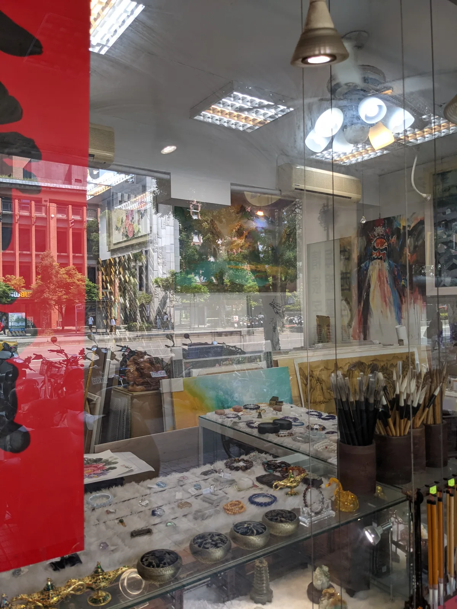

同行觀察筆記 · 臺北市 · 2026.11.04 · reciCsPCSq4PzbfF1
九龍畫廊
九龍畫廊
同行經營模式觀察
和平東路商圈與多張照片的陳列觀察。本筆記依現有臺北市同行資料卡整理，協助比較作品／框材、通路、客群、圖片與待查證事項。
資料基礎：Airtable 同行卡片靜態快照（2026/10/30）；整理日期：2026/11/04。尚未核實的內容會明確標示。

既有同行卡片縮圖｜點選查看 Airtable 來源 ↗01｜核心觀察
和平東路商圈與多張照片的陳列觀察
原始資料有和平東路門市及四張現有照片，適合記錄展售空間、畫作題材和框裝呈現方式。
以上為原有名錄與備註支持的初步觀察；並非已核實的現行官方服務內容或交易成果。
02｜基本資料
同行名稱九龍畫廊
原始分類畫廊／藝術品
現有地區臺北市・大安
名錄地址106台北市大安區和平東路一段184號
登載電話待補
資料來源狀態已有臺灣畫廊備註
03｜網站、地圖與社群入口
Google 地圖／位置Google 地圖／位置 ↗
平台僅代表同行名錄已收錄的入口；並不代表網站現時可用、一定由商家經營或具有可證實的成交量。
04｜作品、服務與既有圖片
原始資料中的服務線索
原始資料有和平東路門市及四張現有照片，適合記錄展售空間、畫作題材和框裝呈現方式。
既有卡片圖片（4 張）
這些是啟動器已存的 GitHub 壓縮圖，原始附件及圖說須回 Airtable 核對；不推定照片的拍攝日期或所有權。
展開 Airtable 原始觀察備註
九龍畫廊（台北店） 106台北市大安區和平東路一段184號 0928 501 673 https://maps.app.goo.gl/ZsutiBiUCMV6Hpmd6
05｜可能的商業模式與客群（待驗證）
既有資料分類
畫廊／藝術品
依同行資料的既有標籤，先放入此類別比較；是否同時具備其他業務應另行訪查。
值得研究的經營假設
和平東路商圈與多張照片的陳列觀察
研究其作品或服務如何展示、詢價與交付；尚不能由名錄推定銷售規模、客單價或營收。
可追蹤的分析面向
產品／服務主題客群與需求售價與報價網站及社群導流作品／框條／材料照片實體服務流程
06｜對達利畫廊／井象藝術可借鏡的方向
建議 1
可直接借鏡
以實體店面的照片建立「畫作 + 框體 + 空間」三層案例。
建議 2
比較驗證
規劃與同一條街其他畫廊的展示方式對照，但不臆測營業成果。
這一節為經營規劃建議，而非對商家的真實成效作出評分。
07｜待查證與行動清單
下列勾選狀態只會存於目前瀏覽器，方便持續研究，不會寫回 Airtable。
08｜來源、圖片與雙向連結
原始同行卡片識別碼：reciCsPCSq4PzbfF1。資料建立以既有名錄為準；若後續取得新資料，應先核對真實來源再更新本頁。
網頁已標記 noindex；然而 GitHub Pages 是公開網址，不應放入未授權的私人客戶資料。對外資訊仍需自行核對原始資料授權與正確性。